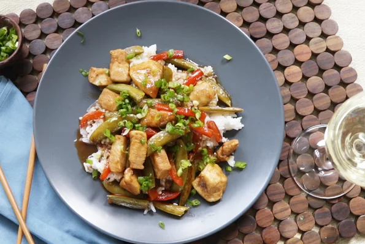

Szechuan Chicken

Chicken is stir-fried with red bell pepper and sugar snap peas and served over rice in this Szechuan-inspired dish perfect for a weeknight.
- 1 cup jasmine rice
- 1 1/2 cups water
- 1 1/2 teaspoons sea salt, divided
- 1 1/4 lb skinless, boneless chicken breast, cu tinto 3/4-inch peices
- 3 tablespoons cornstarch
- Place rice in pot and boil for 15-20 minutes
- Mix salt, chicken breasts and cornstarch together in a bowl
- Cook in pan